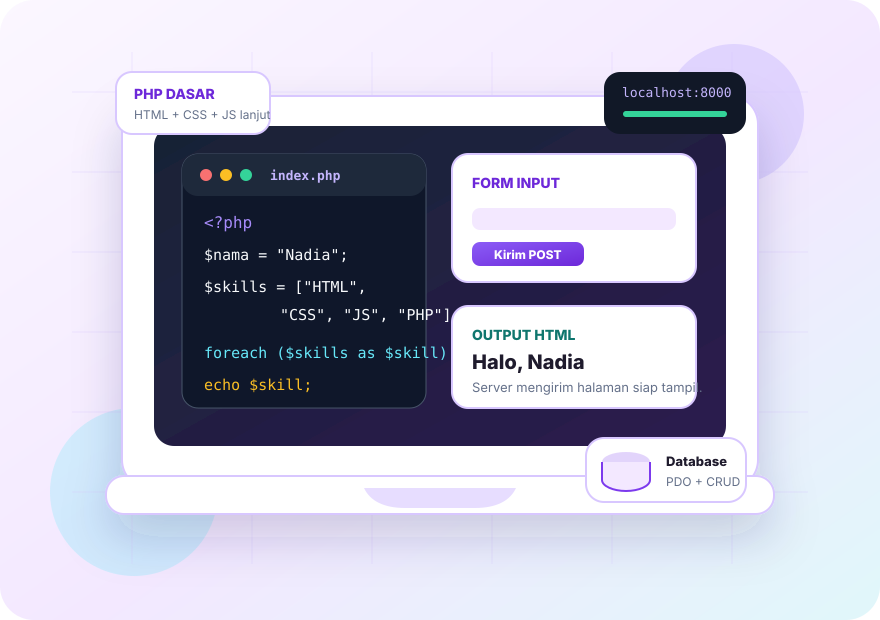

Bahasa sangat sederhana
Setiap konsep dijelaskan seperti percakapan kelas: apa gunanya, kapan dipakai, dan bagian mana yang harus diketik.
Materi dibuat seperti kelas kecil: pahami dulu idenya, ketik contoh pendek, ubah sedikit, lalu gabungkan menjadi project PHP yang rapi, aman, dan siap dipindahkan ke hosting.

Setiap orang masuk dari titik yang berbeda. Pilih jalur yang paling mirip dengan keadaanmu agar belajar tidak terasa menebak-nebak.
Setiap konsep dijelaskan seperti percakapan kelas: apa gunanya, kapan dipakai, dan bagian mana yang harus diketik.
Siswa belajar dari contoh pendek, mengubah satu nilai, menjawab recall, lalu membaca error yang sering muncul.
Setelah dasar kuat, konsep disatukan menjadi form, JSON, CRUD, upload, dashboard, dan checklist siap deploy.
Pemula lebih mudah paham saat aktivitasnya konsisten: lihat konsep, ketik, ubah, jelaskan ulang, lalu hubungkan ke project.
Mulai dari materi, coba latihan, pecahkan bug, lalu rakit mini project. Tidak perlu loncat jauh; satu langkah kecil sudah cukup.